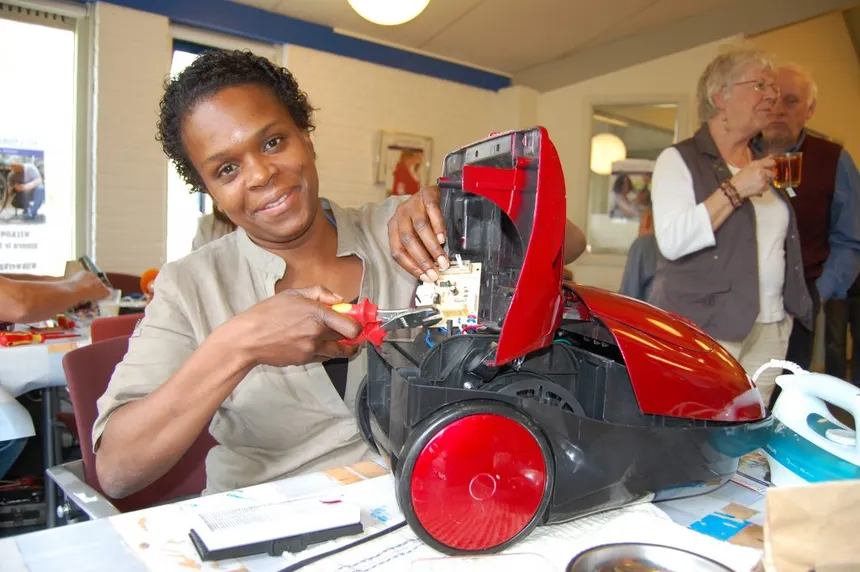
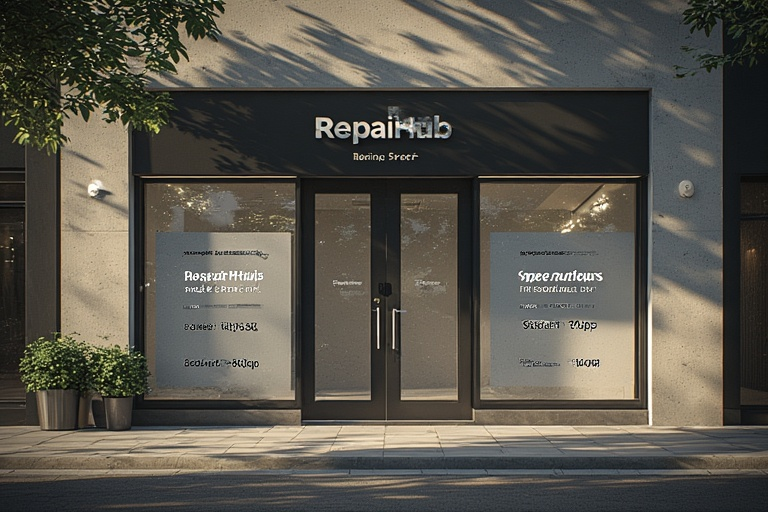
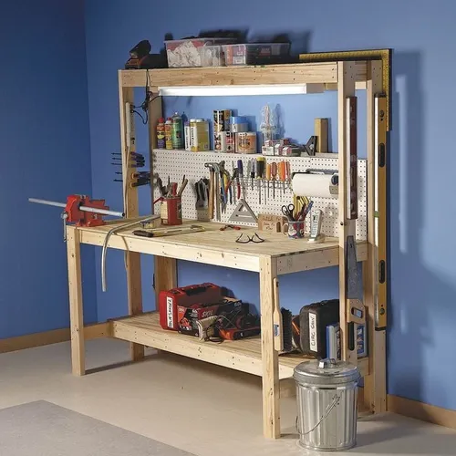

Fix-it Amsterdam is dé specialist in het repareren van huishoudelijke apparaten, smartphones, tablets en kleine elektronica. Onze deskundige medewerkers staan klaar om jouw kapotte spullen snel en vakkundig te herstellen, vaak binnen één dag.
Duurzaamheid staat bij ons centraal: waar mogelijk gebruiken we gerecyclede onderdelen en minimaliseren we afval. Onze experts geven persoonlijk advies en zorgen dat elk apparaat een tweede leven krijgt.
Met ruime openingstijden, inclusief zaterdag, maken we het zo makkelijk mogelijk om je apparaten te laten repareren. Iedere reparatie wordt uitgevoerd met zorg en precisie, ondersteund door een garantie van minimaal drie maanden.p>
Of het nu gaat om een smartphone, een stofzuiger, een laptop of een e-bike, wij hebben de kennis en tools om het te herstellen. Bij RepairHub Amsterdam combineren we snelheid, kwaliteit en milieubewustzijn, zodat jij zorgeloos verder kunt met je p>


